在这里占个地儿,用来存放我认为值得收藏的博客啦,友链啦,或是各种书籍等等…反正就是各种杂物
工具
termtosvg:一个命令行录屏工具,简单易用

bat:cat的改进版,支持语法高亮,翻页
ncdu:du的改进版,以tui的方式展示磁盘空间,比du不知道高到哪边去了,清理磁盘空间特别方便
screenfetch:展示(秀)自己Linux发行版的工具.之前一直在看别人展示,却不知道他们用的啥,现在终于知道了
博客
阮一峰大大的博客!我参考了他好多东西:http://www.ruanyifeng.com/home.html
某邱姓基佬的博客,话说这域名???:http://www.wujinyao.xyz/
萌萌哒の柯基的博客,某学长大佬:https://heroyf.club/
数魔的博客,同届大数据大佬:https://my.oschina.net/guochao521
sakurasonoshironeko的博客,虽然看不懂写的什么,反正很强就是了:https://2heng.xin/
狭間のハザマ的博客:https://blackone.wang/
某位Linux大神的博客,涵盖了各种Linux知识,有事没事都可以来参考下:http://www.cnblogs.com/f-ck-need-u/p/7048359.html
柳婼 の blog,算法大神,很牛批:https://www.liuchuo.net